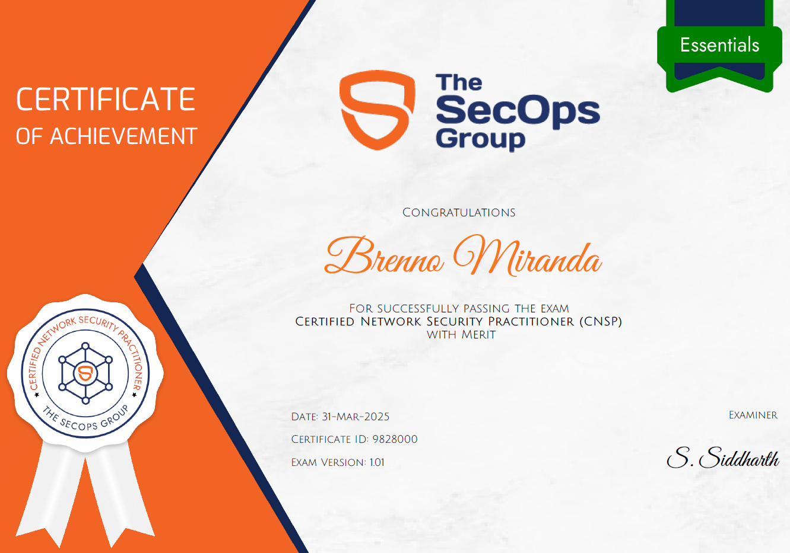

A CNSP, Certified Network Security Practitioner, ofertada pela The SecOps Group, é uma certificação voltada à segurança de redes, com ênfase em identificação de vulnerabilidades comuns de ciptografia, Active Directory, hardening em Windows e Linux, além de engenharia social.
No dia 31/03/2025, realizei a prova, sendo aprovado com méritos.

Temas cobrados
Perante o escopo da certificação, os seguintes temas são abordados:
- TCP/IP (Protocols and Networking Basics)
- OSI Layer
- IPv4 and IPv6 addresses
- Router, Switch and Hub
- Network Discovery Protocols
- Network Architectures, Mapping and Target Identification
- Network Scanning & Fingerprinting
- Testing Network Services
- Cryptography
- Active Directory Security Basics
- Linux and Windows Security Basics
- Common Vulnerabilities Affecting Windows Services
- Testing Web Servers and Frameworks
- Basic Malware Analysis
- Social Engineering Attacks
- Network Security Tools and Frameworks (Such as Nmap, Wireshark, etc.)
- Open-Source Intelligence Gathering (OSINT)
- Database Security Basics
- TLS Security Basics
- Password Storage
Sobre o exame
Trata-se de uma prova de múltipla-escolha de 60 questões, onde é disponbilizado 60 minutos para sua conclusão. Caso o candidato acerte mais de 60% da prova, o mesmo será aprovado, assim se certificando. Caso o mesmo acerte mais de 80% da prova, sua certificação terá o acrescimo de "with merit", evidenciando assim a alta porcentagem de acerto. A prova aborda todos os temas citados em seu escopo, tendo questões que variam entre análise de trafego de rede e resolução de problemas.Durante a prova, é requerido acesso a camera e microfone, para validação de ambiente físico e evitar ações que ferem a conduta de ética do exame.
Referências de estudo para o exame
- TCP/IP Model | https://www.geeksforgeeks.org/tcp-ip-model
- What is OSI Model? – Layers of OSI Model | https://www.geeksforgeeks.org/open-systems-interconnection-model-osi
- Difference Between IPv4 and IPv6 | https://www.geeksforgeeks.org/differences-between-ipv4-and-ipv6
- Difference between Hub, Switch and Router | https://www.geeksforgeeks.org/difference-between-hub-switch-and-router
- What is Network Discovery? | https://www.solarwinds.com/resources/it-glossary/network-discovery
- Nmap 101: A Beginner’s Guide to Network Mapping and Security | https://ravitejbandlekar.medium.com/nmap-101-a-beginners-guide-to-network-mapping-and-security
- Cybersecurity Fingerprinting | https://www.recordedfuture.com/threat-intelligence-101/vulnerability-management-threat-hunting/fingerprinting-in-cybersecurity
- Cryptography for Dummies - TryHackMe | https://tryhackme.com/r/room/cryptographyfordummies
- HTTP in Detail - TryHackMe | https://tryhackme.com/r/room/httpindetail
- Basics of Active Directory | https://medium.com/@hrishidevdarsan/basics-of-active-directory
- Linux Security | https://phoenixnap.com/kb/linux-security
- Understanding Social Engineering | https://www.tripwire.com/state-of-security/5-social-engineering-attacks-to-watch-out-for
- Open-Source Intelligence (OSINT) | https://www.imperva.com/learn/application-security/open-source-intelligence-osint
- Managing SQL Ports | https://jotelulu.com/en-gb/support/tutorials/managing-sql-ports-on-your-windows-server
- O que é o TLS (Transport Layer Security)? | https://www.cloudflare.com/pt-br/learning/ssl/transport-layer-security-tls
- Security Accounts Manager | https://www.techtarget.com/searchenterprisedesktop/definition/Security-Accounts-Manager
- Password Hunting – Linux Privilege Escalation | https://juggernaut-sec.com/password-hunting-lpe/